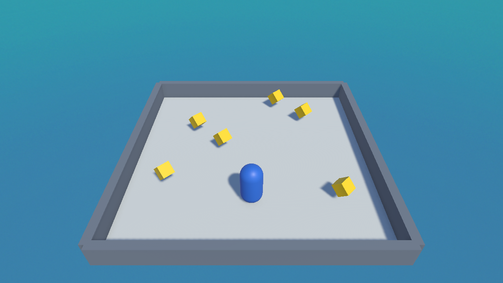

✨ Lesson 7.4: Adding Polish — Particles & Post-Processing
The difference between "a tech demo" and "a game" is often juice — the little bursts, glows, and effects that make actions feel great. Let's add a particle pop on collect and give the whole scene a richer look with post-processing.
🎯 Learning Objectives
- Create a Particle System and play a burst on an event
- Spawn an effect with
Instantiatewhen a star is collected - Add a URP Volume with Bloom and Vignette
- Understand why post-processing lifts the whole look
Estimated Time: 40 minutes
In This Lesson
What Is "Juice"?
Juice is the collection of small, non-essential feedback effects that make a game feel responsive and alive — a sparkle when you grab a coin, a screen that gently glows, a little sound. None of it changes the rules; all of it changes the feel. Our arena already looks tidy; polish makes it pop:

A Collect Particle Burst
A Particle System spawns lots of tiny sprites — sparks, smoke, confetti. We'll make a quick one-shot burst:
- Add one via GameObject ▸ Effects ▸ Particle System.
- In the Inspector, set the main module's Duration ≈ 0.5, untick Looping, and set Start Lifetime ≈ 0.5.
- Open the Emission module → add a Burst of ~20 particles at time 0.
- Set Shape to Sphere and give Start Color a bright yellow.
- Save it as a prefab named
CollectFX.
📖 Definition
Particle System: a component that emits and animates many small particles at once — ideal for sparks, dust, fire, magic, and pickup bursts. A non-looping one with a burst makes a perfect one-shot effect.
Spawning It on Collect
When a star is collected, create the effect at the star's position with Instantiate, just before destroying the star:
public GameObject collectFX; // drag the CollectFX prefab here
void OnTriggerEnter(Collider other)
{
if (other.CompareTag("Player"))
{
// spawn the burst where the star was
if (collectFX != null)
Instantiate(collectFX, transform.position, Quaternion.identity);
GameManager gm = FindObjectOfType<GameManager>();
if (gm != null) gm.AddPoint();
Destroy(gameObject);
}
}📖 Definition
Instantiate(prefab, position, rotation): creates a fresh copy of a prefab in the scene at runtime. It's how games spawn bullets, enemies, effects — anything that appears while playing.
💡 Self-cleaning effects: tick Stop Action → Destroy on the Particle System (or add a tiny script that Destroys it after a second) so spent bursts don't pile up in the Hierarchy.
Post-Processing with a Volume
Post-processing applies full-screen image effects after the scene is rendered — like Instagram filters for your game. In URP it lives on a Volume:
- Add GameObject ▸ Volume ▸ Global Volume.
- On its Volume component, click New to create a Profile.
- Click Add Override and add Bloom — enable Intensity (~0.5) so bright things gently glow.
- Add another override, Vignette — a subtle dark edge that focuses the eye (Intensity ~0.3).
- Make sure the Main Camera has Post Processing ticked (in its Camera component).
⚠️ Nothing changed?
Two usual causes: the camera's Post Processing checkbox is off, or the Volume isn't Global (a local volume only affects the camera inside its collider). Tick Post Processing and use a Global volume.
✅ Pro Tip: subtle wins
Post-processing is easy to overdo. A little Bloom and Vignette lifts a scene; too much drowns it. Nudge values gently and compare with the effect on and off.
Hands-on Exercise
🏋️ Exercise: Make it pop
- Build the
CollectFXburst prefab. - Wire it into the Collectible's
collectFXslot and confirm a burst appears on pickup. - Add a Global Volume with Bloom and Vignette; enable Post Processing on the camera.
- Play with the effects on, then temporarily disable the Volume to feel the difference.
- Combine with the collect sound from Module 6 — burst + ding together feels fantastic.
💡 No burst appears
Check the collectFX prefab is assigned on the collectible, that its Particle System has a Burst (not just looping emission), and that it isn't destroyed before it plays.
🎯 Quick Quiz
Question 1: What does Instantiate do?
Question 2: Post-processing (Bloom, Vignette) in URP is added via a…
Summary
🎉 Key Takeaways
- Juice = small feedback effects that make actions feel great.
- A non-looping Particle System with a burst makes a one-shot pickup effect.
Instantiatespawns a prefab at runtime — spawn the burst on collect.- A URP Volume with Bloom + Vignette lifts the whole look (camera Post Processing on).
🚀 What's Next?
Your mini-game is complete and juicy! In Module 8 we tidy the project and — the big moment — build it into a real game file you can share.
🎉 Module 7 complete — you built a game!
Level, player, pickups, score, win/lose, particles, and glow. That's a full game loop.